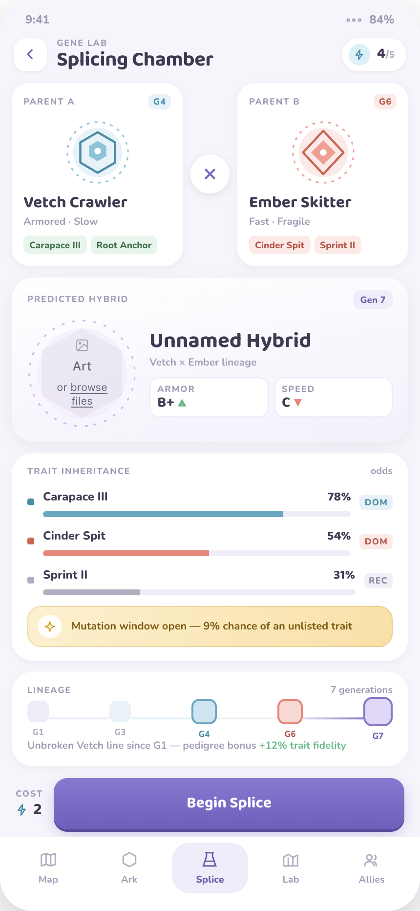
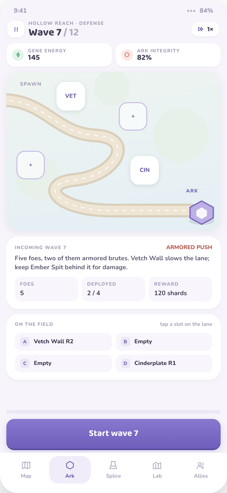
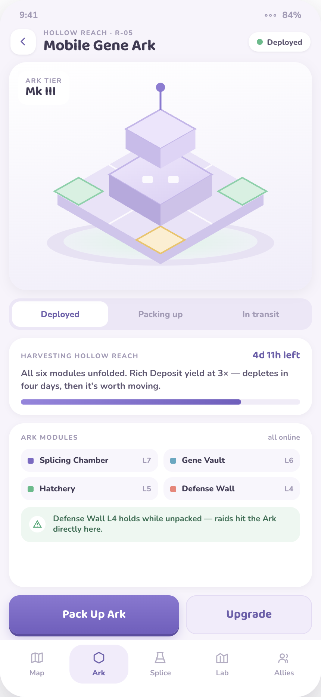
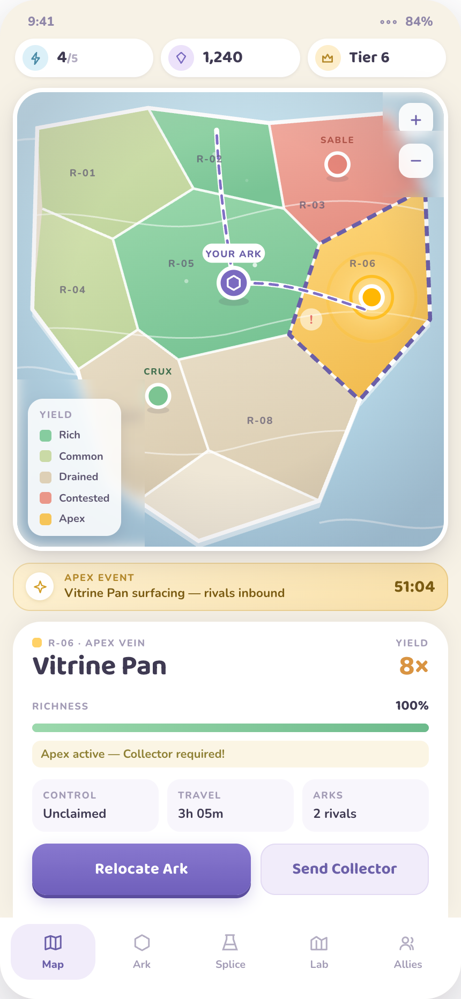
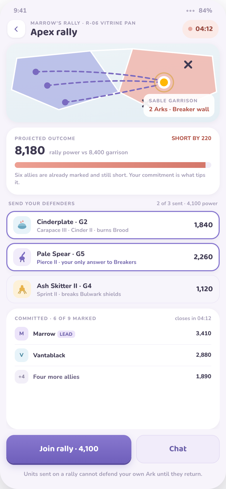
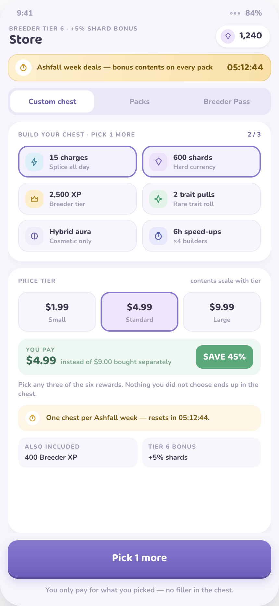

Splice two creatures. Defend the lane. Move the whole base when the ground runs dry.
20 SCREENS DESIGNEDFULLY INTERACTIVE
Premise
Three proven systems, joined at one point of tension: the creatures you breed are the only thing defending a base that has to keep moving.
Breeding depth
Six founders, inherited traits, and a pedigree that rewards patience over rerolling.
Readable combat
Lane defense in ninety seconds, where composition decides the wave, not power creep.
A base that moves
Resource nodes deplete, so standing still is the losing play. Territory stays contested.
Core Loop
Each beat produces the input the next one needs, so no beat can be skipped for long.
01
Splice
Spend a charge, pair two creatures, inherit traits from both.
→ produces defenders
02
Defend
Place hybrids beside the lane and hold waves off the Ark.
→ produces trait fragments
03
Expand
Relocate the Ark onto richer ground and hold it with allies.
→ produces splice charges
The Splice
Two parents, one hybrid. The forecast shows which traits are likely to carry before the charge is spent, so a pairing is a decision rather than a gamble.
Traits inherit from both parents, with tiers that stack
One in nine splices mutates into something off-table
Charges cap at five and regenerate on a timer

Hybrid Lineage
Generations compound. A late-generation creature is a record of weeks of decisions, which is exactly why it cannot be sold.
G1
Founders
2 traits
G2
First hybrids
15 pairings
G4
Tiered traits
Tier II–III
G7
Apex line
Cannot be purchased

Wave Defense
Waves walk a fixed path to the Ark. Defenders go in the pockets beside it, never on the road, so placement is about coverage rather than mazing.
90s
Typical wave length
8
Raider archetypes
The Mobile Gene Ark
Everything the player builds travels with the base. Packing up is the intended play, not a setback — but an Ark in transit is stowed and cannot defend itself.
1Pack up — production stops, harvest in progress is forfeited
2Cross — visible to rivals, unable to fight back
3Unpack — richer yield, and lab timers never paused

Resource Pressure
Yield decays on a schedule the player can read, so relocation is always a timed decision rather than a surprise.
1×
3×
8×
Common
No decay
Rich
Drains in 4 days
Apex
Burns out in 51h
Why it works
The richest ground is the most temporary and the most contested. Players who camp fall behind on yield; players who chase Apex veins expose their convoys to interception.
Neither camping nor chasing is dominant, so the map stays in motion without any forced timer.

Alliance Territory
Region colour reads yield at a glance. Allied Arks harvest the same ground at full rate, so clustering is a mechanical advantage, not just a chat window.
Rich — full co-op rate for every allied Ark present
Contested — yield splits across every Ark in the region
Apex — eight times base, and never uncontested
The Apex Rally
Nine allies commit defenders to a timed assault. Units sent cannot defend home until they return, so joining is a real cost.
The design thesis
A rally can out-power the garrison and still lose. Without a Pierce unit in the group, the Breaker wall holds regardless of total power.
Composition decides outcomes, which is what sends players back to breed rather than back to the store.

Creature Cast
Six founders, each readable in silhouette alone at forty pixels. Shape carries the role before any card is read.
Vetch
Wall
Ember
Splash
Skitter
Swarm
Hollow
Sniper
Loam
Support
Pale
Control
Counter Design
Eight raiders, eight different answers. Every founder owns at least one, so none becomes the obvious skip.
Skirmisher
Splash · Ember
Breaker
Pierce · Hollow
Lash
Taunt · Vetch
Courser
Chill · Pale
Brood
Cinder · Ember
Drift
Reach · Hollow
Bulwark
Sprint · Skitter
Delver
Burrow · Loam
WAVE RULENever send two raiders answered by the same trait, or one perfect defender clears the wave.
Monetization
Everything sold is a speed-up. No trait, creature or counter is purchase-only, so the competitive ladder stays credible.
Custom Chest
Player picks three of six rewards, with live value maths. Nothing in the chest is filler.
Breeder Pass
Seasonal, dual track. Every paid-track trait is obtainable free, just slower.
Scout reports
Micro-spend on information: rival ETA, escort strength, a five minute head start.

Live Ops Cadence
A rhythm small enough for one live-ops owner to run, with a seasonal headline that grows the game rather than inflating it.
Daily
Login gift, free pull, ally help
Cheap habit hooks. No timer anxiety.
Twice weekly
Apex vein surfaces
Scheduled conflict. Alliances coordinate a rally.
Weekly
Gene Lab server goal
Whole server splices toward one target with tiered rewards.
Every 6 weeks
New founder species
One founder adds six pairings and a new counter axis.